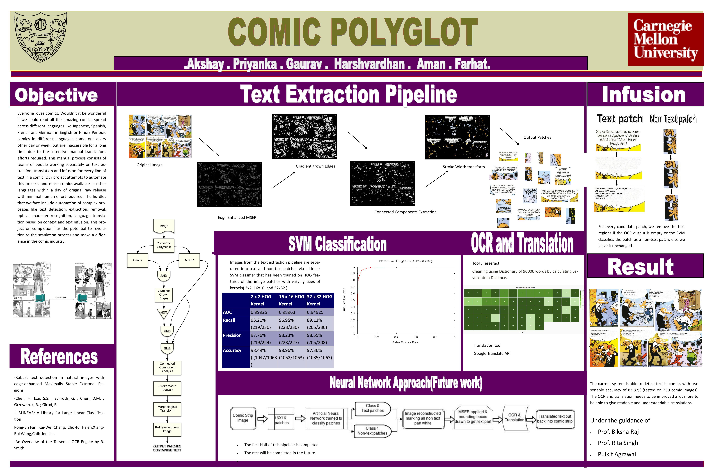
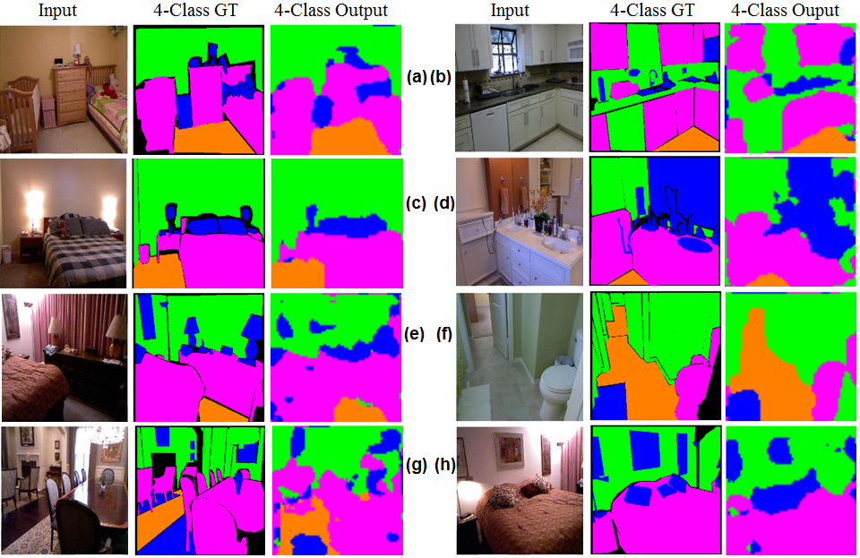
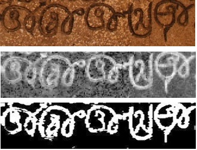

Software Engineer in Machine Learning at Facebook
B.Tech (ECE) from Delhi Technological University(formerly DCE)
I am interested in pushing the current boundary of knowledge in
Machine Learning, Computer Vision and Data Science.
Updates !!
August 2017: Our "Robocodes" paper at CVPR 2017 (paper), (code)
August 2016: I am working as Software Engineer at Facebook.
February 2016: Paper selected in ICCTICT 2016. Now I am working with DataCulture as M.L. Intern to bring predictive intelligence to supply chain.
December 2015: Started working as Data Science Intern at Right Relevance.
Augsut 2015: Wonderful summer spent in RI at Carnegie Mellon University.
January 2015: Awesome winter school, we got Best Project Award.
November 2014: Selected for CMU IPTSE Winter School 2014.
October 2014: One paper selected in ICVGIP-2014, another in ACCV-2014.
Talks & Seminars
March 2016: Paper presentation in ICCTICT 2016 on "FPGA Accelerated Abandoned Object Detection”. (slides)
August 2015: Delivered a talk on my research on "Scene Understanding for Robots using
RGB-Depth Information”, Robotics Institute, CMU. (slides)
I have been involved with research since freshman year of my college life.
Some awesome people with whom I have worked
Sebastian Scherer, Daniel Maturana - Machine Learning
Prof. Bhiksha Raj, Pulkit Agrawal - Computer Vision & Pattern Recognition
Saurabh Gupta, Manjeet Hooda - FPGA Design & Synthesis
|  |  | |
|---|---|---|
| As Data Scientist at DataCulture Inc. developed predictive intelligent models for logistics in supply chain. Models that allocates shipper for a particular order, predicts various delays in delivering it, estimating pickup date of order by shipper, predicting returns on orders. | Comic Polyglot-A system that identifies the text regions in comic strips like Manga and subsequently translates it's Japanese text into English using an OCR engine while maintaining the syntax. It is aimed to help English-speaking manga comic readers. [project page] [poster] [best project award] | Scene understanding through semantic labeling. The work exploits the geocentric encoding of a depth image and uses a multi-scale deep convolutional neural network architecture that captures high and low-level features of a scene to generate rich semantic labels. [report] [bib] |
|  | ||
|---|---|---|
| Aaravya Lunabot - DTU's official entry into NASA Lunabotics Mining Competition 2013. The challenge required student teams to design and build a mining robot that can traverse the simulated lunar chaotic terrain, excavate lunar regolith and deposit the regolith into a collector bin within ten minutes. [paper] [outreach project report] [some photos] | Designed a standalone system that uses a novel static background modeling algorithm and identifies any object lying abandoned for a given period of time. Implemented on Xilinx FPGA ZYNQ-ZC702 board. VxWorks used as RTOS to manage the real time processes. [ICCTICT-2016] | HistExtract, a system that extracts highly correlated text from historical inscription images. Work featured in ”Digital Heritage” project sponsored by Department of Science & Technology, Govt. of India. [ICVGIP-2014] [bib] [ACCV-2014 workshops] [bib] |